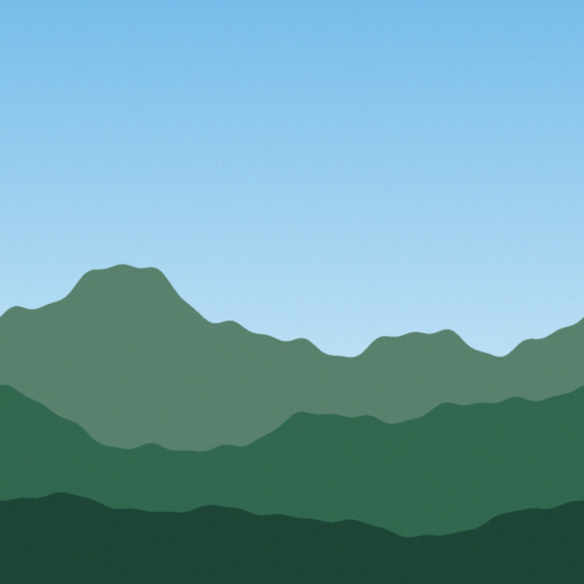

Type, layout & fallback
Tracked medium
Centered text wraps deliberately within the available space.
Right aligned words and numbers in a deliberately narrow text box.
Regular bold italic inline code and a link.
The width of this paragraph is intentionally close to a wrap boundary. The final words should stay on the same browser lines.
Vertically centered with flex alignment
System mono 0123456789
Gradient display text
- Bullet with inline weight and a longer continuation to wrap onto the next line
- Second entry
- Numbered entry
- Next number
| Family | Metric |
|---|---|
| Avenir Next | 140 |
| Georgia | 92 |
Serif italic
Explicit second line
Dash patterns and markers
Borders, effects & shapes
Rounded dashed border
Rounded dotted border
Single dashed side
Single dotted side
Gradient, shadow, rotation and opacity
